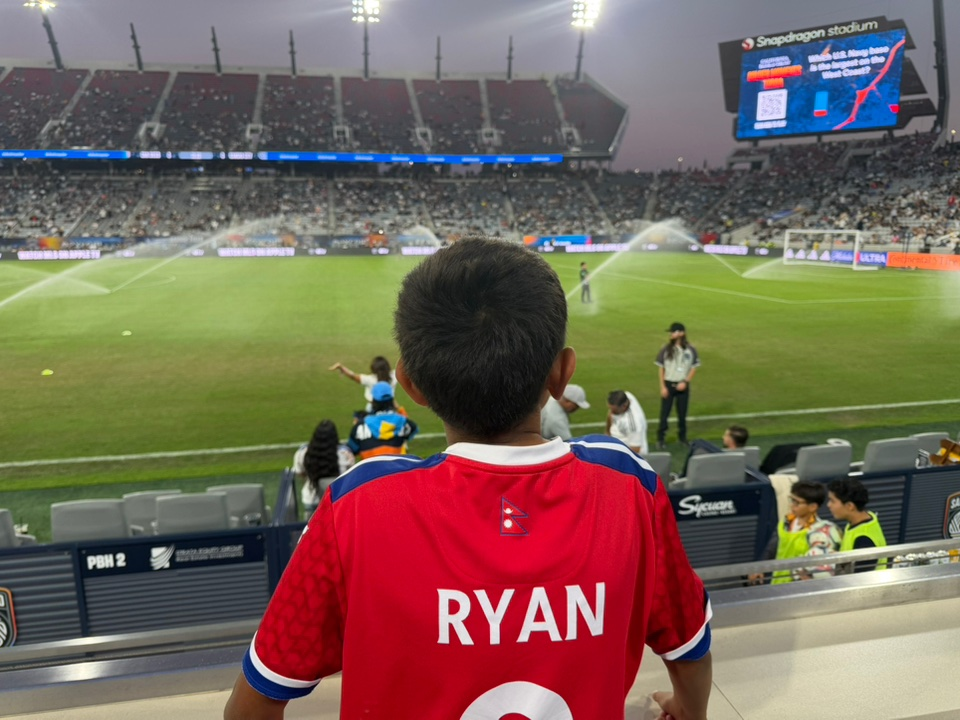
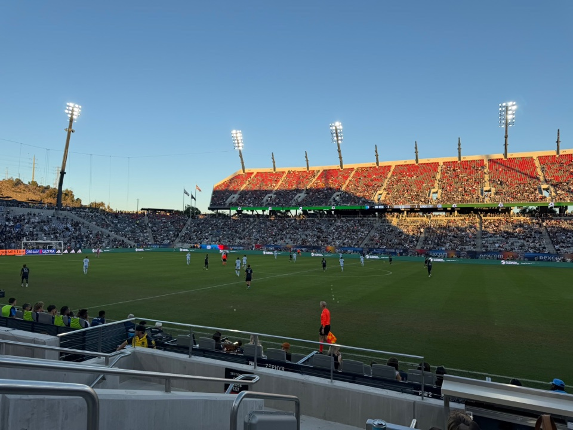
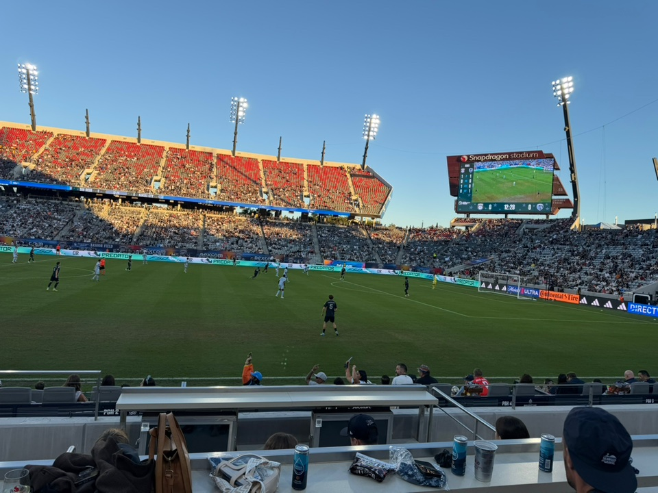

A Flat Farewell: Sporting KC Spoil SDFC's Home Finale 1–0
San Diego FC's season ended the way too much of it had gone: with the ball, with the chances, and without the goal. A 1–0 loss to Sporting Kansas City at Snapdragon Stadium on Saturday, on Decision Day, closed the 2026 campaign at 9-14-11 and 38 points, 13th in the West — a year after this club finished atop the conference in its expansion season.
There was nothing at stake in the table for the home side. The playoffs had been gone since the October 28 loss in Vancouver. Kansas City, too, had been eliminated weeks earlier. What was left was pride, a home crowd of 23,695 on a clear 79-degree evening, and the chance to send the season off properly. San Diego could not take it.

The chances were there — in the first half, and after the break
The pattern was set inside four minutes. Marcus Ingvartsen, captaining the side, stung Stefan Cleveland's palms with a shot from the left side of the box. Twelve minutes later, Cleveland turned away Bryan Zamble's header. Ingvartsen missed wide with another header in the 39th minute, and a minute later Pablo Sisniega had to deny Stephen Afrifa point-blank at the other end.
It stayed 0–0 at halftime, and the best chance of the game so far came ten minutes into the second half: Zamble, in space on the left wing, drove into the box and sent a low effort off the near post. San Diego had the ball — 63% of it, 17 shots to Kansas City's 15, eight corners to four — but the finishing touch kept eluding them, just as it had for most of the final stretch of the season.

One foul, one penalty, one goal
The game was decided in the 76th minute, and it was decided the cruelest way for a team chasing a farewell win. André Luiz, bearing down on goal, was brought down in the penalty area by Kieran Sargeant. The Brazilian picked himself up, sent Sisniega the wrong way, and stroked the kick into the lower-right corner. His eighth goal in just 13 MLS matches.
It was also, in the end, the only goal Kansas City needed. Stefan Cleveland made four saves to log only Sporting's second clean sheet of the year, and the visitors — who put six shots on target to San Diego's four — saw the game out. San Diego's last real bid for an equalizer came in the 79th minute, when Jeppe Tverskov's header from the center of the box went over the crossbar.

What the finale actually says about the season
The record. SDFC finish 9-14-11, 38 points, 13th in the West. The win at St. Louis a week earlier had at least broken the ten-match winless run; this result means the club managed just one victory in its final 12 fixtures. That is the number that will hang over the offseason more than any single result.
The opponent. Kansas City finished 7-22-5, 26 points — but the win lifted them out of last place in the Supporters' Shield standings, above CF Montreal on matches won, and kept them the only MLS charter club never to finish last in their 31-year history. They came to San Diego with nothing to play for either, and they left with the points.
The contrast. A year ago, this club topped the West in its first season. This year it ends it 13th, eliminated before the finale, beaten at home on the last day by the team that started the day bottom of the league. The fans still turned out — 23,695 of them, under a clear sky, into the evening — and that, more than the result, is what the club carries into next year: a home that shows up even when the season does not give it much back.
Thanks for the season, Snapdragon. See you in 2027.